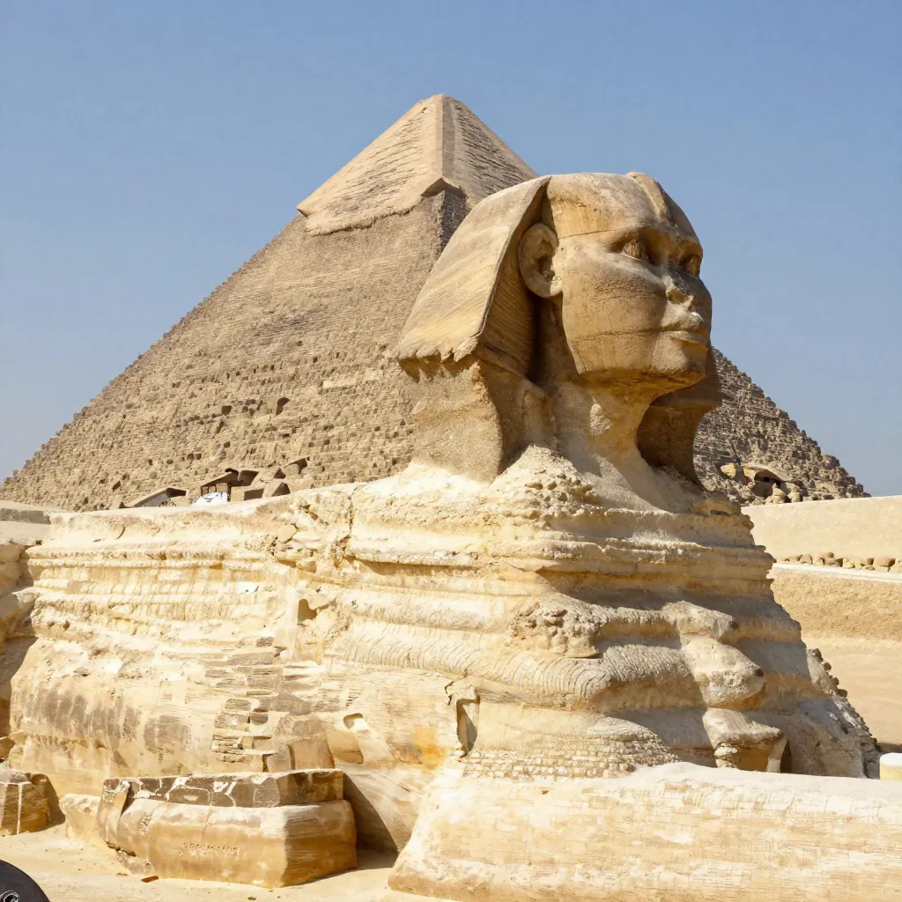
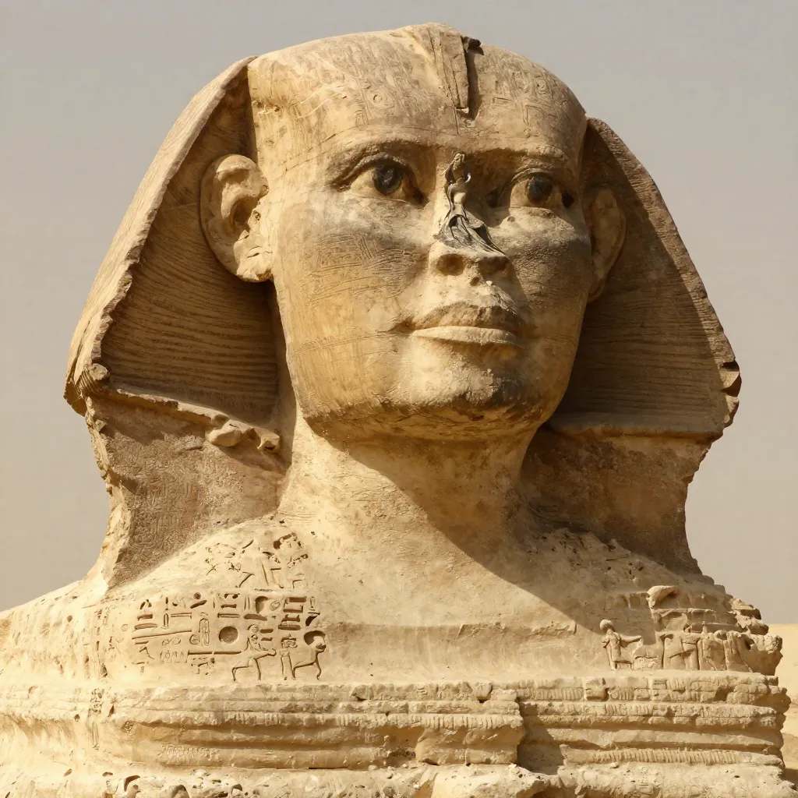

The Great Sphinx of Giza: Who Really Built It and What's Hidden Beneath?

The Great Sphinx has guarded the Giza plateau for over 4,500 years, yet its origins remain fiercely debated. From controversial erosion theories to hidden chambers beneath its paws, the Sphinx keeps yielding new secrets.
At dawn on the Giza Plateau, when the first light of the Egyptian sun catches the face of the Great Sphinx, something extraordinary happens. For a few brief minutes, the ancient limestone glows gold, and the weathered features of the world's largest monolithic statue seem almost alive — a guardian frozen mid-breath, gazing east across 4,500 years of human history. The Sphinx measures 240 feet long, 66 feet high, and 62 feet wide at its haunches. It was carved from a single ridge of limestone bedrock, supplemented with blocks at the paws and haunches, in an operation so ambitious that the workers had to excavate a horseshoe-shaped trench around the outcrop just to free the body from the surrounding stone.
And yet, for all its enormity and its 4,500-year vigil beside the Great Pyramids, the Sphinx refuses to answer the most basic questions about itself. Who carved it? When? Why? And what, if anything, lies hidden beneath those massive paws? The conventional answer attributes the Sphinx to Pharaoh Khafre (c. 2558–2532 BCE), builder of the second pyramid at Giza. But a passionate minority of researchers has spent three decades arguing that the geological evidence tells a radically different story — one that could push the origins of the Sphinx back thousands of years before the pyramids themselves.
The debate is one of the most contentious in all of archaeology, and it shows no sign of resolution.
Carved from Living Rock: The Monument Nobody Explained
The Great Sphinx sits in a shallow enclosure on the eastern edge of the Giza Plateau, facing due east toward the rising sun. It depicts a recumbent lion with a human head wearing the royal nemes headdress of an Egyptian pharaoh. The body was carved from the natural limestone of the Giza ridge, while the outstretched paws were built up with hundreds of cut stone blocks. The original surface was coated in plaster and painted in bright reds, blues, and yellows — traces of pigment still visible near one ear.
What makes the Sphinx architecturally unusual is that it was not assembled from separate blocks like the pyramids. It was carved in place from a natural outcrop, which means the sculptors had to work within the constraints of the existing rock. Flaws in the limestone were patched with mortared stones. The head, carved from a harder stratum, has weathered better than the softer body limestone.
- 🦁 The Sphinx measures 73 meters (240 feet) long and 20 meters (66 feet) high from base to crown
- 🪨 It was carved from a single limestone outcrop, making it the largest monolithic statue in the world
- 📏 The paws alone extend 15 meters (50 feet) in front of the body
- 🎨 Traces of original red, blue, and yellow pigment survive near the ear, suggesting it was once brightly painted
- 🏛️ The limestone blocks removed from the Sphinx enclosure were reused to build the nearby Sphinx Temple
👃 The Nose That Wasn't Shot Off by Napoleon
One of the most persistent myths about the Sphinx is that Napoleon's soldiers used its nose for target practice during the French campaign in Egypt (1798–1801). In fact, the nose was already gone long before Napoleon arrived. Danish explorer Frederic Norden made detailed drawings of the Sphinx in 1737 showing it clearly noseless. The most likely culprit was a Sufi Muslim named Muhammad Sa'im al-Dahr, who reportedly chiseled off the nose in 1378 after discovering local farmers making offerings to the statue.

The Sphinx measures 240 feet long and 66 feet high, carved from a single limestone outcrop
The Dream Stele: A Pharaoh's Promise
Between the Sphinx's paws sits a large granite slab known as the Dream Stele, erected by Pharaoh Thutmose IV around 1400 BCE. The inscription tells a remarkable story: as a young prince, Thutmose fell asleep in the shadow of the Sphinx after a hunting expedition. In his dream, the statue spoke to him, promising the throne of Egypt if Thutmose would clear away the sand that had buried it. Thutmose did so, became pharaoh, and erected the stele to commemorate the bargain.
The stele is important not only for its narrative but for what it reveals about the Sphinx's condition: by 1400 BCE, roughly 1,100 years after its supposed construction, the statue was already buried up to its neck in desert sand. The encroaching desert was a constant threat, and the Sphinx was excavated and reburied multiple times over the centuries. The stele also mentions Khafre's name, which Egyptologists cite as evidence linking the Sphinx to that pharaoh, though the relevant passage is fragmentary and its interpretation is debated.
Water Erosion and the War Over the Sphinx's Age
In 1990, a Boston University geologist named Robert Schoch traveled to Giza at the invitation of the writer John Anthony West. Schoch was not an Egyptologist. He was a geologist who studied ancient rocks and erosion patterns. But what he saw in the Sphinx enclosure would ignite one of the fiercest debates in the history of archaeology.
The walls of the Sphinx enclosure — the trench carved around the statue when it was sculpted from the bedrock — display deep, undulating erosion patterns characterized by smooth, rolling vertical fissures and rounded profiles. Schoch recognized these patterns immediately: they were not caused by wind and sand, the dominant erosive forces in arid Egypt. They were caused by precipitation — rain falling on the limestone and running off the surface over extended periods.
This was a explosive observation. The Giza Plateau has been a hyper-arid desert for at least 5,000 years. If the erosion on the Sphinx enclosure walls was caused by rainfall, the carving must have occurred during a much wetter period — potentially between 7,000 and 5,000 BCE, or even earlier, at the end of the last Ice Age around 10,000 BCE. That would make the Sphinx two to five times older than mainstream Egyptology allows.
The Case Against the Water Erosion Theory
Mainstream Egyptologists and geologists have pushed back hard against Schoch's hypothesis. The objections are substantial. First, the Sphinx enclosure fits neatly into the overall layout of the Giza pyramid complex, aligned with Khafre's pyramid and causeway in a way that strongly suggests a unified construction plan. Second, limestone removed from the Sphinx enclosure was used to build the nearby Sphinx Temple, which is securely dated to Khafre's reign through architectural analysis.
Geologist James Harrell of the University of Toledo argued that the erosion patterns could have been caused by Nile flooding and groundwater saturation, not rainfall — a process called haloclasty, where salt crystallization in the limestone causes it to flake and erode in patterns that can mimic water weathering. Other geologists have noted that Old Kingdom tombs and structures in the same area, securely dated to around 2500 BCE, show only wind and sand erosion, not the water weathering Schoch describes — suggesting the Sphinx enclosure erosion is unusual even for its supposed era.
🧑🔬 The Head That's Too Small
Schoch and others have pointed out that the current head of the Sphinx is disproportionately small for the body — roughly 1/20th of the total volume, when natural proportions would suggest something closer to 1/10th. This suggests the head may have been re-carved from a larger original, perhaps a lion's head, during the dynastic period. If true, this would explain why the head shows only wind erosion (having been exposed to desert conditions for less time) while the body shows what some interpret as water erosion.

The undulating erosion patterns on the Sphinx enclosure walls are central to the dating controversy
Beneath the Paws: Tunnels, Chambers, and the Hall of Records
The idea that something lies hidden beneath the Sphinx is as old as the statue itself. Medieval Arab writers described passages beneath the monument. In the 19th century, British engineer John Shae Perring drilled a hole into the Sphinx's back and claimed to have found a small chamber. In 1991, Schoch and geophysicist Thomas Dobecki conducted a seismic survey of the Sphinx enclosure and identified several subsurface anomalies — hollow spaces beneath the paws and flanks of the statue that appeared to be artificial chambers rather than natural cavities.
The most tantalizing anomaly lay beneath the left paw of the Sphinx: a rectangular void measuring approximately 9 by 12 meters, with what appeared to be a tunnel or passage leading to it. Dobecki, who had extensive experience with seismic mapping, described the anomaly as "consistent with a man-made chamber."
Edgar Cayce and the Hall of Records
The idea of hidden chambers beneath the Sphinx gained enormous popular traction through the predictions of Edgar Cayce (1877–1945), the American psychic known as the "Sleeping Prophet." In a series of trance readings in the 1930s, Cayce described a "Hall of Records" buried near the Sphinx, containing the accumulated knowledge of the lost civilization of Atlantis. Cayce predicted that this chamber would be discovered and opened between 1996 and 1998, revealing texts that would transform human understanding of history.
Cayce's predictions have not been fulfilled. No Hall of Records has been found. But the A.R.E. (Association for Research and Enlightenment), the organization that preserves Cayce's legacy, has funded and promoted research at Giza for decades, and the "Hall of Records" concept has become permanently entangled with the Sphinx debate.
In 2009, Egypt's chief archaeologist Zahi Hawass oversaw a drilling investigation around the Sphinx to settle the chamber question once and for all. The team found natural fissures and ancient repair work, but no artificial chambers. Hawass declared the matter closed. Critics argued the investigation was too limited in scope.
🧭 The Beard in the British Museum
The Sphinx originally wore a ceremonial false beard, typical of Egyptian pharaohs, which broke off and was found in pieces between the paws. The surviving fragments are now housed in the British Museum in London, one of many Egyptian artifacts removed during the colonial era. The beard likely fell off during antiquity; some fragments weigh over 200 pounds and were carved from granite.
The Sphinx in Context: Guardian or Something More?
Setting aside the dating controversy, what was the Sphinx for? The mainstream interpretation is that it served as a guardian figure — a monumental protective statue placed at the entrance to the Giza necropolis. In Egyptian religion, the sphinx was associated with the sun god, often called Hor-em-akhet ("Horus of the Horizon"). The Sphinx faces due east, directly toward the sunrise at the equinox, reinforcing the solar connection.
The Sphinx may also have had a political dimension. A colossal statue combining the strength of a lion with the authority of a pharaoh would have served as a powerful statement of royal power and divine legitimacy. Later pharaohs, including Ramesses II, added inscriptions and stelae around the Sphinx, claiming its protective power for their own reigns.
What the Sphinx's story shares with other ancient enigmas — from Stonehenge to Gobekli Tepe — is the gap between what we know and what we feel we ought to know. The monument is too large, too sophisticated, and too deliberate to be casually explained. And the fact that no written record of its construction has ever been found — no foundation deposit, no builder's inscription, no contemporary account — leaves room for every theory from the plausible to the outlandish.
- 📜 The Dream Stele of Thutmose IV (c. 1400 BCE) is the oldest known text mentioning the Sphinx
- 🏜️ The Sphinx was buried up to its neck in sand for most of its history; major excavations occurred in 1817, 1886, 1926, and 1936
- 🔧 Major restoration work has been ongoing since 1931, with the most recent phase beginning in 2018
- 🧱 The Sphinx was originally covered in plaster and painted bright colors, including red, blue, and yellow pigments
🌅 Watching the Sunrise for Eternity
The Great Sphinx has watched the sun rise over the Nile for at least four and a half millennia — and possibly much longer. The water erosion debate remains unresolved, with mainstream Egyptology holding firm to the Khafre attribution while geologists like Robert Schoch continue to point to erosion patterns they believe are incompatible with a 2500 BCE construction date. The hidden chambers, if they exist, remain sealed beneath limestone and centuries of accumulated sand. Perhaps the deepest truth about the Sphinx is that it was designed to endure, to watch, and to provoke wonder — and in that mission, at least, it has succeeded beyond anything its creators could have imagined. The limestone guardian will keep its vigil, and we will keep coming back to ask it questions it has no intention of answering.
Frequently Asked Questions
Who built the Great Sphinx?
The mainstream archaeological consensus attributes the Great Sphinx to Pharaoh Khafre (c. 2558–2532 BCE) of the Fourth Dynasty. The evidence includes the Sphinx's proximity to Khafre's pyramid, the use of limestone from the Sphinx enclosure in the nearby Sphinx Temple, and architectural similarities between the Sphinx Temple and Khafre's Valley Temple. However, no definitive inscription naming Khafre as the builder has ever been found.
Could the Sphinx be much older than Egyptologists claim?
Geologist Robert Schoch has argued that water erosion patterns on the Sphinx enclosure walls suggest a construction date of 5,000–10,000 BCE, thousands of years before the pyramids. Most Egyptologists and many geologists reject this, attributing the erosion to other processes such as haloclasty (salt weathering) or groundwater effects. The debate remains unresolved and is one of the most controversial in Egyptology.
Are there really hidden chambers beneath the Sphinx?
A 1991 seismic survey by geophysicist Thomas Dobecki identified subsurface anomalies beneath the Sphinx's paws that appeared to be artificial voids. However, a 2009 drilling investigation led by Zahi Hawass found only natural fissures and ancient repair work. The existence of deliberate man-made chambers beneath the Sphinx has not been confirmed, though the possibility continues to attract speculation.
What happened to the Sphinx's nose?
Contrary to the popular myth that Napoleon's soldiers shot it off, the nose was already missing by 1737, when a Danish explorer documented its absence. Historical accounts attribute the destruction to a Sufi Muslim named Muhammad Sa'im al-Dahr, who reportedly chiseled off the nose around 1378 CE after discovering local farmers making offerings to the statue, which he considered idolatrous.
ð Recommended Reading
Want to learn more? Check out The Message of the Sphinx by Robert Bauval & Graham Hancock on Amazon for a provocative investigation into the Sphinx's hidden history. (As an Amazon Associate, we earn from qualifying purchases.)
References & Further Reading
- Wikipedia: Great Sphinx of Giza — Comprehensive overview of the monument, its history, and controversies
- Wikipedia: Sphinx Water Erosion Hypothesis — Detailed coverage of the Schoch dating controversy
- Britannica: Great Sphinx — History, description, and cultural significance
- World History Encyclopedia: The Mystery of the Great Sphinx — Detailed analysis by Brian Haughton
- Robert Schoch: Research Highlights — The geologist's own account of the water erosion findings
- Wikipedia: Hall of Records — Edgar Cayce's prophecy and the search for hidden chambers
- Madain Project: Great Sphinx Tunnels and Chambers — Catalogue of documented subsurface features
Editorial note: reconstructions are continuously revised as imaging and inscription studies improve. See our Editorial Policy.